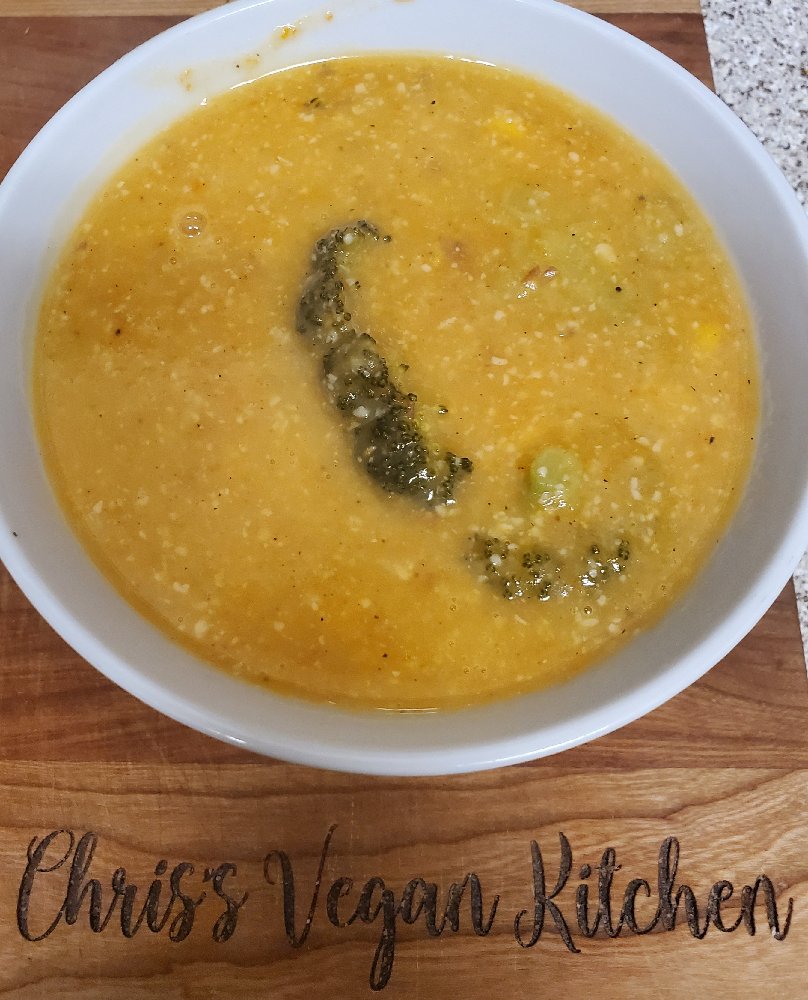

Broccoli Cheddar Soup
Estimated Time: 45 minutes
I've always been a fan of soup. One of my favorites was the broccoli cheddar
soup from Panera Bread. So after going vegan I diligently worked on how I
could possibly recreate a vegan version. This recipe was birthed out of an
adaptation of vegan cheese recipe. I thought that the vegan potato and carrot
cheese would lend itself perfectly to be the base of a cheddar soup. So utilizing
some of the same ingredients as our vegan cheese we added some coconut milk to add
some extra creaminess.
Ingredients
- 2 cups diced potato
- 1 cup diced carrots
- 1 cup diced broccoli
- 3 cloves minced garlic
- 1 medium onion diced
- 2 cups vegetable stock
- 1 can coconut milk
- 1/2 cup nutritional yeast
- 2 tbsp olive oil
- 1 tbsp lemon juice
- 1 tsp salt
- 1/2 tsp black pepper
- 1/2 tsp garlic powder
- 1/2 tsp onion powder
Instructions
- Bring 4 quarts of water to a rapid boil, add chopped potatoes and carrots and
boil for 20 mins
- 10 mins into the potatoes and carrots boiling begin sauteing onions with olive oil
for 3 mins then add minced garlic and saute for 3 more mins. Add spices and lemon juice
near the end of sauteing
- Drain the water from the potatoes and carrots. Combine with sauted mixture and add
vegetable stock, coconut milk, and nutritional yeast. Cook on low heat for 10 mins
- Use an immersion blender or regular blender to blend the soup. Return back to the stove add
chopped broccoli and cook on medium low heat for 10 mins.
- Serve with fresh bread or get creative and serve in a bread bowl! Stays for 4-5 in fridge
or freeze to keep longer.